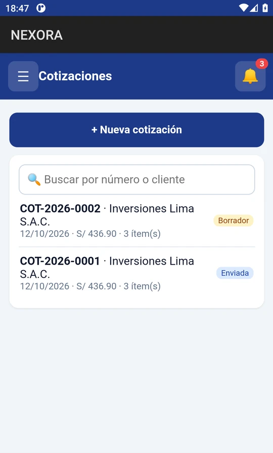
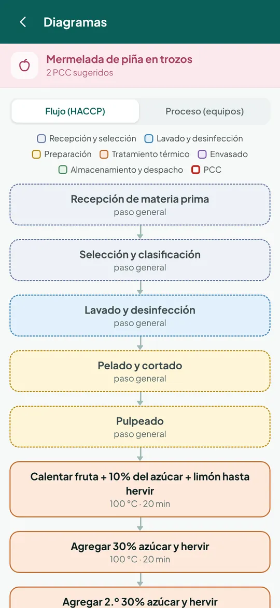
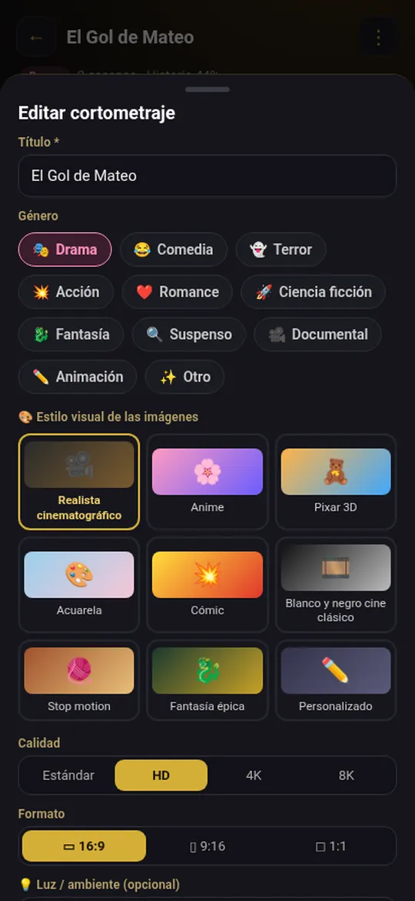
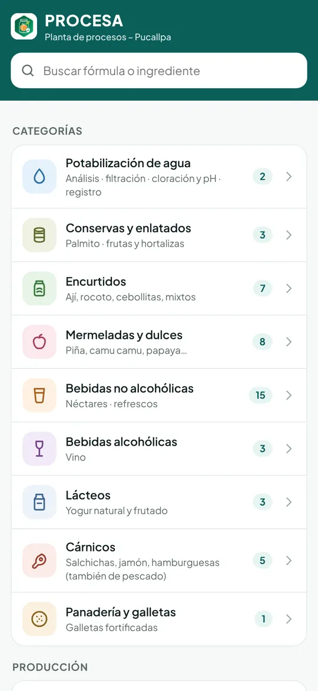

Herramientas para superarte.
PROCESA, NEXORA y CortoStudio: apps Android en español para llevar tu planta, tu negocio y tus ideas un paso más allá.



Las tres apps
PROCESA
Ingeniería agroindustrial en tu bolsillo.
Recetas, cálculos y registros de planta en una sola app, pensada para plantas procesadoras, MYPES y estudiantes de ingeniería.

- Costeo por lote con envases y precio sugerido
- Sin cuentas y sin anuncios
Las capturas muestran datos de ejemplo. Política de privacidad de PROCESA
NEXORA
Gestión comercial para tu negocio.
Cotiza, factura, despacha y cobra desde el celular, con documentos en PDF listos para compartir.
- Facturas y boletas, con facturación electrónica SUNAT
- Inventario con kardex
- Pagos recibidos por Yape y Plin
- Reportes mensuales en PDF y Excel, e impresión Bluetooth
Las capturas muestran datos de ejemplo. Política de privacidad de NEXORA
CortoStudio
Crea cortometrajes con IA.
De la idea al cortometraje terminado, paso a paso y desde el teléfono. Tú eliges el proveedor de IA y usas tus propias claves.
- Guion con acción y diálogos
- Narración con voces de IA o del teléfono
- Video animado con audio sincronizado
- Asistente que hace cambios por chat
- Sin cuentas, sin anuncios y sin analíticas
Nuestra misión
Convertimos el conocimiento técnico y las normas locales en apps simples, que funcionan en el teléfono que ya tienes.
Plantas de alimentos
Cálculos de proceso, controles BPM y trazabilidad al pie de la línea.
MYPES
Ventas, documentos y cobranza sin software caro.
Universidades
Enseñar procesos agroindustriales con normativa peruana.
El equipo de Rouje Technologies®
¿Universidad, instituto o planta?
Ofrecemos licencias y adaptamos nuestras apps a tu institución.
- Cursos y laboratorios
- Equipos de calidad y producción
- Programas de apoyo a MYPES y emprendedores
Contacto
¿Una consulta, una idea o una alianza? Cuéntanos aquí.
Se abre tu app de correo con el mensaje listo para enviar.
- País
- Perú
- Plataforma
- Android